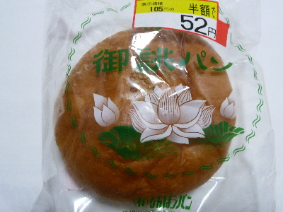
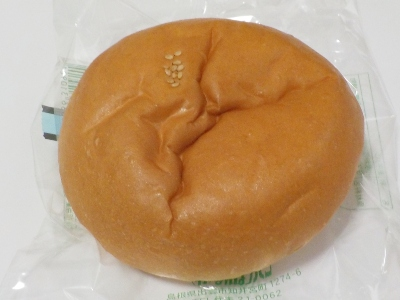

更新日 : 2026/09/27

お彼岸用のお供えパンが安くなっていました。
シーズンものなので日にちが過ぎるとしかたないですね。
買う方は賞味期限に余裕がある商品が安売りになるので嬉しいです。お買い得でした。
パッケージに法事パンって書いてあると思っていましたが、御誂パン（おあつらえパン）ってなっていたんですね。知らなかった。
2016/03/21 普通にアンパンなんですけど、なんぽうパンの小倉パンとはなんか違う気がする。

2016/09/27 餡子の中に何粒か入っている硬めの小豆の食感が好きだなと思いました。
【おいしいものを食べよう。】【たくさん寝よう。】
【ソロ活をしよう!】【季節感のあることをしよう。】【動画視聴はほどほどに。】【当サイトの全てのコンテンツは無断転載禁止です。】